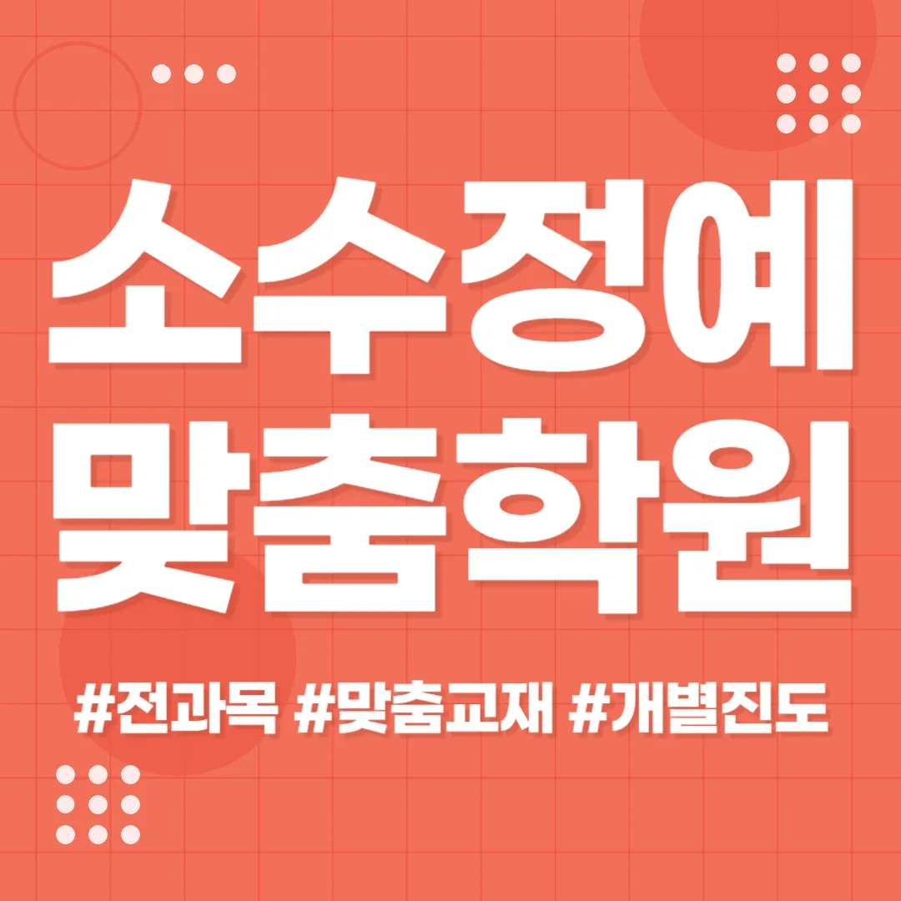

첫째로 주변 주거 환경과 학군을 살펴보면 학부모와 아이 모두 편리하게 다닐 수 있는 곳을 찾을 수 있어요. 예를 들어 수원영통동은 최근 재개발로 교육 인프라가 강화되고 있어요. 많은 학부모는 교통 편의성과 안전성을 최우선으로 고려한다는 점을 기억하면 좋아요. 이때 수원영통동 와와코칭센터의 강사 경력과 교육 철학을 직접 문의해 보는 것이 중요해요. 결과적으로 체험 수업을 통해 학습 분위기를 직접 체감하면 선택에 확신이 생겨요.
수원영통동은 학군이 고르게 형성돼 초중고 단계마다 학습 분위기가 다르게 나타나요. 초등 저학년은 놀이와 연계된 기초 개념 습득이 핵심이며, 교실 분위기가 밝고 활동 중심으로 진행돼요. 초등 고학년은 문제 해결 능력과 논리적 사고를 키우는 과제가 늘어나며, 교재의 깊이가 조금씩 심화돼요. 중학생은 교과서 외에도 탐구 활동과 프로젝트가 들어가며, 자기주도 학습 습관이 자리 잡기 시작합니다. 고등학생은 대학 진학 목표에 맞춰 심화 학습과 모의고사가 중심이 되며, 시간 관리와 전략적 학습이 강조돼요. 전체 학년에서는 디지털 스크린을 활용한 시각 자료가 상시 준비돼 시청각 학습 효과를 높이고 있어요
와와학습코칭센터는 학습 동선을 최적화한 설계로 학생 개개인의 이해도에 맞춰 단계별 진도를 진행해요. 주 대상은 초등 고학년부터 중학생까지이며, 전과목을 아우르는 통합 커리큘럼을 운영해요. 강점은 맞춤형 피드백과 반복 학습을 통한 개념 정착에 있어요. 수강료는 미술 1회 100,000원, 2회 160,000원으로 책정돼 있어요. 긍정적 자기 대화를 형성하도록 돕는 프로그램이 포함돼 있어 아이가 스스로 학습에 자신감을 갖게 돼요.
| 학원명 | 와와학습코칭학원 |
| 수강료 | 미술1회 100,000원 | 미술2회 160,000원 |
CURRICULUM
첫 번째 단계에서는 기본 개념을 시각 자료와 실생활 예시로 정리해요. 두 번째 단계에서는 응용 문제를 통해 개념 적용 능력을 테스트해요. 세 번째 단계에서는 개인별 약점 보강을 위한 맞춤형 보충 수업을 제공해요. 마지막 단계에서는 전체 학습 목표를 재점검하고 다음 단계로 연결되는 과제를 부여해요. 이렇게 단계별로 목표를 명확히 하면 학습 효과가 지속적으로 상승해요.
학생들은 시험 전 단계에서 예상 실수를 미리 기록하지 않으면 실전에서 당황하기 쉬워요. 수원영통동 학부모들은 이러한 오류를 방지하기 위해 교과별 노트화 전략을 권장해요. 등록 후에는 학습 목표와 실제 수행 사이의 차이를 점검하는 것이 중요해요. 학습 관리 단계에서는 꾸준한 피드백과 자기 점검을 통해 실수를 최소화하고, 성취감을 유지하도록 돕죠. 이러한 과정은 장기적인 학업 성장에 큰 도움이 돼요. 학부모는 자녀의 학습 일정을 함께 검토하며, 과도한 부담을 방지하기 위해 휴식 시간을 적절히 배분해요. 교사는 정기적인 피드백을 통해 학생이 스스로 오류를 인식하고 교정하도록 유도해요.
와와수원영통동 와와코칭센터의 학습 전략은 데이터 기반 기록과 상담을 시각화해 제공하는 체계적인 운영에 기반해요. 학생마다 맞춤형 학습 플랜을 설계하고, 정기적인 진도 체크를 통해 목표 달성을 지원해요. 이 과정에서 강사는 학생의 강점과 약점을 명확히 파악해 자신감 회복과 성과 향상을 연결해요. 시험 전 공부량 조절이 어려운 경우에도 유연한 일정 조정으로 학생 스스로 학습량을 관리하도록 돕어요. 학습 루틴이 변경될 때마다 즉각적인 피드백을 제공해 조정 과정을 원활하게 진행해요. 결과적으로 학생은 스스로 학습 전략을 재구성하고, 지속 가능한 성장 궤도를 그릴 수 있게 돼요. 이러한 접근은 학부모에게도 투명한 학습 현황을 제공해 신뢰를 강화하는 효과가 있어요. 학생 스스로 데이터와 상담 내용을 시각화해 보는 경험은 자기 주도 학습 능력을 크게 향상시켜요. 따라서 학습 전략은 단순한 강의 전달이 아니라 지속적인 성장 파트너십을 강조한다는 점이 핵심이에요. 이러한 시스템을 통해 시험 점수와 학습 만족도가 동시에 상승하는 긍정적인 결과를 기대할 수 있어요.
이곳은 특히 고등학교 삼 학년처럼 복습은 철저하게 하지만 막상 모의고사를 치르면 실수를 반복하는 아들에게 추천하고 싶어요. 공부를 열심히 하고 있는데도 점수가 오르지 않아 답답해하는 친구들에게는 정확한 원인 분석과 해결책이 제시되니까 큰 도움이 될 거랍니다. 또한 필요한 자료를 제때 찾지 못해서 수업 흐름을 놓치는 경우가 많은 학생이라면 체계적인 자료 관리 시스템을 통해 이러한 문제를 해결해 줄 수 있어요. 자신의 노력에 비해 결과가 바로 눈에 보이지 않아 지쳐 있는 친구들에게는 올바른 학습 방법을 제시해 주어서 효율을 높여주고, 다시 한번 도전해 볼 용기를 북돋아 줄 수 있는 최적의 환경이라고 할 수 있답니다.
첫째, 상담 시 선생님의 성실한 자세가 깊은 인상을 남겼어요. 둘째, 실제 수업에서는 질문 전용 시간이 충분히 마련돼 집중력이 크게 향상됐어요. 셋째, 개별 첨삭이 맞춤형이라 스스로 오류를 고치는 능력이 생겼어요. 넷째, 대회 준비 과정에서 자신감이 눈에 띄게 상승했어요. 다섯째, 진로 탐색 프로그램을 통해 새로운 가능성을 발견하고 목표가 명확해졌어요. 여섯째, 전체적인 학습 분위기가 친절하고 협력적이라 지속적인 동기 부여가 유지돼요.

| 학원명 | 와와학습코칭학원 |
| 등록번호 | 제3918호 |